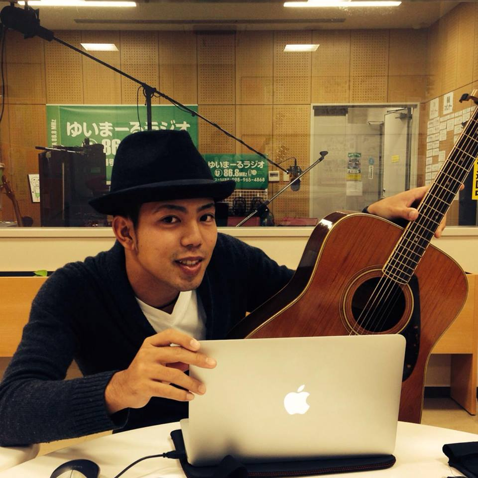

在学生のコメント
産業情報学科４年次
島袋 覚
実はプログラミングに興味を持ったのは大学入学後、安里先生に出会ったのがきっかけでした。最初、安里先生はこわくて厳しい方と思ってたけど、授業でわからないことを質問したり話をするうちに感化されましたね。大学で学んだことは、助け合い。１人ではできないことも友人の協力や先生のサポートがあればできることに気付かされました。今は、自分の世界を狭めず興味あることに積極的に挑戦したいです！


産業情報学科３年次
中西 哲大
本学科はいろんな勉強をしたい人向きだと思います。情報は応用が効き、簿記も学べます。２年次後期からはゼミ（少人数クラス）が始まりますが、学びの質や量が高まり友達も増えてより大学生活が楽しくなりました！ビジネスの第一線で活躍する企業家の話も聞ける講義もあり、やる気がみなぎります。
知念 桂五
東京しか行った事ないです。

知念 桂五
東京しか行った事がない。
安里 肇
インターンシップ先：沖縄国際大学
安里 肇
インターンシップ先：沖縄国際大学